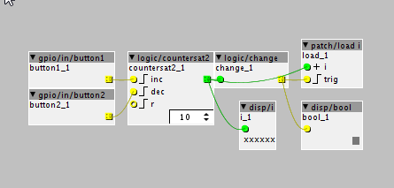

i want to change patches from SDcard, using the two hardware buttons.
I made this controller object and enabled it.

I then created a patch bank, and uploaded it to the SDcard
Whatever i do the "on sdcard" remains blank...
do i have to rename the folders like folder000 folder001?
Can someone please explain how it should be done?
How to use patch banks and controller object with s1 and s2 buttons
philoop
#1
Axoloti release 1.0.12
johannes
#2
The "on sdcard" column remains blank in the current implementation.
I believe the plan was to indicate if the corresponding filedate on the sdcard matches the filedate of the patch, and skipping patches that already are up-to-date on the card, when doing a bulk upload. But a patch bank bulk upload hasn't been implemented yet.
There should not be a need to rename anything on sdcard. After creating a patch bank, you need to select patches in the bank and press "Upload" (bottom right button) one-by-one, and "Upload bank table". References in the bank table are by name, so re-ordering, adding and removing patches does not require re-upload of the patch.
Known broken in the patch bank editor is that it will keep asking to save the patch bank file.
philoop
#3
thats what i did ...i tried this object http://community.axoloti.com/t/patch-bank-and-midi-program-change/1078 and my object none of them work
johannes
#4
What is failing?
Are the patches effectively written on the sdcard (each patch in a separate directory, directory name is the name of the patch, inside the directory, there is a file patch.bin)?
Is there a startup patch (start.bin) on the sdcard?
philoop
#5
Yes!! does the control object have 2 be an axo or is axs?... i think i will format the card and start from scratch
johannes
#6
The control object needs to be present in a library, you should be able to locate it in the object selector. If it's a sub-patch (the common scenario), it's .axs
philoop
#7
yes
i made the controller patch the start.bin...
if i press my button,
Axoloti says: file error: FR_NO_PATH, filename:"/2randomsaws1"
keyman
#10
This works from a long time now 
I think its the path to the actual *.axs file that tricky. @philoop please make sure its correct; when you run LIVE a patch check console:
Using controller object: ..............
Generate code complete
Start creating directory on sdcard : .........
Yes its automatic some more info: http://community.axoloti.com/t/how-to-use-controller-object/910/3
Will try your patch (using buttons S1 /S2)
Don't give up
philoop
#11
hi keyman, thanks for stepping in! i use now ur patchchange object and the console says
Using controller object: C:\Users\Philoop\Documents\axoloti\objects\controllers\patchchange.axs
Unable to created controller for : C:\Users\Philoop\Documents\axoloti\objects\controllers\patchchange.axs
keyman
#13
OK so, in Preferences - Controller object - only enter: controllers/patchchange
So no extension for the file.
Click OK, and don't forget to: FILE - Reload objects

keyman
#15
Great to know @philoop !! and this using the buttons S1/S2 or MIDI program change??
Would be nice to combine both ways (sending MIDI program change AND also use button S1/S2 up/down)
maybe it can't be "combined" ?
johannes
#17
Looking at your first patch: the counter object will lose its value and not be able to increment to the next patch after the first. The controller object is only integrated in patches, objects will not preserve their internal value while switching patches...
philoop
#18
aha !!! thanks !! is there a work around ? if not i am doomed to use a pot or decoder, actually what i want do is to have a dual segment displaying 100 presets, i have also be playing around with the 74HC595 recently....
and yes i could only switch back and forth between two patches
johannes
#19
There is currently no work around.
I think the closest and cleanest solution 'd be adding a function to the firmware to get the patch index of the currently loaded patch.